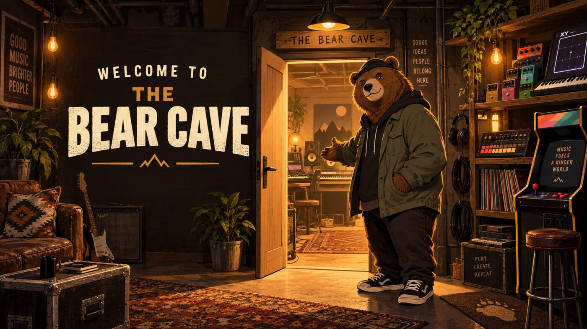

Music toys, practical sound tools, and experiments built to be touched. No account. No install. Pick a door and start making noise.
NEWEST BUILD
Synth Pedalboard
Play the XY synth with touch, mouse, keyboard, or MIDI—then run it through a draggable chain of thirteen stompboxes.
Open the pedalboardInstruments
Make Music
Start here when you want to play.
🎸↗
Synth Pedalboard
XY performance synth feeding a movable chain of stompbox effects.
📡↗Bearmin Theremin
Play pitch and volume in the air with mouse, touch, keyboard, or MIDI.
🥁↗Drum Machine
Build punchy patterns, switch kits, and shape a beat in the browser.
🟢↗Kaoss Command
A focused XY instrument inspired by hands-on Korg performance flow.
🎹↗3xOSC Synth
Three oscillators, big sound banks, deep controls, and built-in effects.
Studio shelf
Shape Sound
Record, separate, tune, and destroy.
Loose wires
Play & Experiment
Less studio. More trouble.